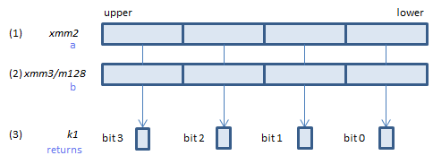

VCMPNLT_UQPS - CoMPare Not Less Than Unordered Quiet Packed Single
VCMPNLT_UQPS xmm1, xmm2, xmm3/m128 (V1
__m128 _mm_cmp_ps(__m128 a, __m128 b, _CMP_NLT_UQ)

For each float, if (1) >= (2) or either or both of (1)(2) is NaN, set 1, else set 0, to all bits of the corresponding float of (3).
VCMPNLT_UQPS ymm1, ymm2, ymm3/m256 (V1
__m256 _mm256_cmp_ps(__m256 a, __m256 b, _CMP_NLT_UQ)

For each float, if (1) >= (2) or either or both of (1)(2) is NaN, set 1, else set 0, to all bits of the corresponding float of (3).
VCMPNLT_UQPS k1{k2}, xmm2, xmm3/m128/m32bcst (V5+VL
__mmask8 _mm_cmp_ps_mask(__m128 a, __m128 b, _CMP_NLT_UQ)
__mmask8 _mm_mask_cmp_ps_mask(__mmask8 k2, __m128 a, __m128 b, _CMP_NLT_UQ)

For each float, if (1) >= (2) or either or both of (1)(2) is NaN, set 1, else set 0, to the corresponding bit of (3).
If k2 bit is 0, the comparison is not done and the corresponding bit of (3) is set to zero. Upper bits of (3) are zero cleared.
VCMPNLT_UQPS k1{k2}, ymm2, ymm3/m256/m32bcst (V5+VL
__mmask8 _mm256_cmp_ps_mask(__m256 a, __m256 b, _CMP_NLT_UQ)
__mmask8 _mm256_mask_cmp_ps_mask(__mmask8 k2, __m256 a, __m256 b, _CMP_NLT_UQ)

For each float, if (1) >= (2) or either or both of (1)(2) is NaN, set 1, else set 0, to the corresponding bit of (3).
If k2 bit is 0, the comparison is not done and the corresponding bit of (3) is set to zero. Upper bits of (3) are zero cleared.
VCMPNLT_UQPS k1{k2}, zmm2, zmm3/m512/m32bcst{sae} (V5
__mmask16 _mm512_cmp_ps_mask(__m512 a, __m512 b, _CMP_NLT_UQ)
__mmask16 _mm512_mask_cmp_ps_mask(__mmask16 k2, __m512 a, __m512 b, _CMP_NLT_UQ)
__mmask16 _mm512_cmp_round_ps_mask(__m512 a, __m512 b, _CMP_NLT_UQ, int sae)
__mmask16 _mm512_mask_cmp_round_ps_mask(__mmask16 k2, __m512 a, __m512 b, _CMP_NLT_UQ, int sae)

For each float, if (1) >= (2) or either or both of (1)(2) is NaN, set 1, else set 0, to the corresponding bit of (3).
If k2 bit is 0, the comparison is not done and the corresponding bit of (3) is set to zero. Upper bits of (3) are zero cleared.
This instruction is:
Unordered - If either or both of source operands is NaN, condition met.
Quiet - No exception on QNaN
VCMPPS instrucion imm8 value = 15h
x86/x64 SIMD Instruction List
Feedback